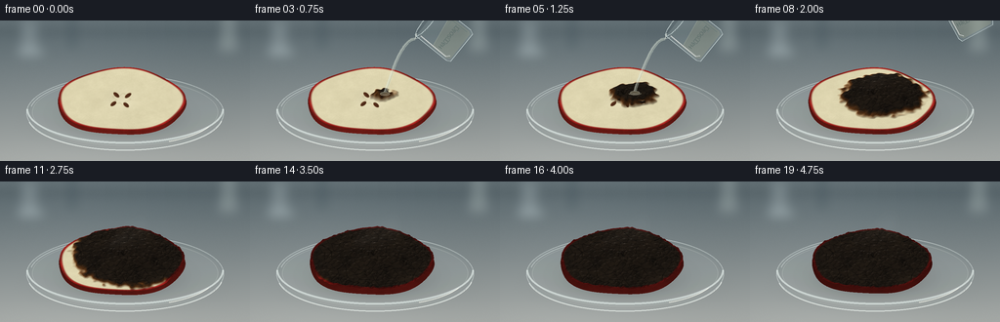
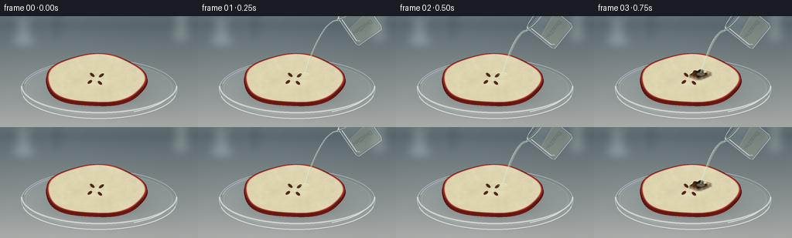

CODING AGENTS AS PIXEL WORLD MODELS
traex/GPT-6.1-Sol · phygen_152
点击播放 · 原生 RGB 像素
逐轮保存的候选
回放视频、检查图与代码变化。
每份候选均可单独播放。实际图片检查记录在下方工具轨迹中。
候选 01播放与检查图
点击播放 · 原生 RGB 像素


展开代码变化
--- 上一保存版本
+++ 本次保存版本
@@ -0,0 +1,276 @@
+from pathlib import Path
+import numpy as np
+from PIL import Image, ImageDraw, ImageFont, ImageFilter
+from scipy.ndimage import gaussian_filter, map_coordinates
+from scipy.spatial import cKDTree
+from artifact_io import save
+
+ROOT = Path(__file__).resolve().parent
+S=3
+W,H=256*S,144*S
+rng=np.random.default_rng(152)
+Y,X=np.mgrid[0:H,0:W].astype(float)/S
+
+def noise_field(shape, sigmas):
+ out=np.zeros(shape)
+ for sigma,amp in sigmas:
+ n=gaussian_filter(rng.normal(size=shape),sigma)
+ out+=n/(n.std()+1e-8)*amp
+ return out
+
+TH,TW=370,450
+v,u=np.mgrid[0:TH,0:TW]
+U=(u-TW/2)/2.6
+V=(v-TH/2)/2.6
+fine=noise_field((TH,TW),[(.45,.24),(1.6,.25),(6,.28),(18,.32)])
+organic=noise_field((TH,TW),[(5,.55),(17,.5),(35,.2)])
+# Honeycombed carbon texture with actual small swollen surface cells.
+pts=rng.uniform([-76,-66],[76,66],size=(430,2))
+dists, idx=cKDTree(pts).query(np.stack([U.ravel(),V.ravel()],axis=1),k=2)
+d1=dists[:,0].reshape(TH,TW)
+d2=dists[:,1].reshape(TH,TW)
+seam=np.exp(-((d2-d1)/.21)**2)
+cell=np.exp(-d1**2/(2*1.5**2))
+cellcolor=rng.uniform(.65,1.35,len(pts))[idx[:,0]].reshape(TH,TW)
+heightnoise=gaussian_filter(fine,2)
+
+def sample(tex,x,y):
+ return map_coordinates(tex,[y*2.6+TH/2,x*2.6+TW/2],order=1,mode='nearest')
+
+def geom(x,y,phase):
+ shrink=1-.065*phase**2
+ xx=x/shrink; yy=y/shrink
+ ang=np.arctan2(yy/53,xx/65)
+ radial=np.sqrt((xx/65)**2+(yy/53)**2)
+ outline=1+.025*np.cos(5*ang+.9)+.018*np.sin(3*ang)
+ rr=radial/outline
+ return xx,yy,rr
+
+def reaction(x,y,t):
+ progress=np.clip((t-2)/15,0,1)
+ # Local contact point grows into a broad, organic reaction front.
+ distance=np.sqrt(((x-13)/1.10)**2+((y+8)/.9)**2)
+ irregular=sample(organic,x,y)*3.0
+ reach=progress*97
+ if t<3:
+ a=np.zeros_like(x)
+ else:
+ a=np.clip((reach-distance+irregular)/9+.45,0,1)
+ a=a*a*(3-2*a)
+ return a, progress
+
+def surface(x,y,t):
+ a,p=reaction(x,y,t)
+ central=np.exp(-((x-10)**2/(33**2)+(y+7)**2/(30**2)))
+ cellular=sample(cell,x,y)
+ cracks=sample(seam,x,y)
+ h=5.0+.45*np.cos(x*.047)*np.cos(y*.04)
+ h+=a*(2.3+6.8*central)*(1-.35*np.clip((t-14)/5,0,1))
+ h+=a*(1.55*cellular-.65*cracks+.3*sample(heightnoise,x,y))
+ # A faint central core depression remains in the fresh cut surface.
+ h-=.6*(1-a)*np.exp(-(x*x+y*y)/110)
+ return h
+
+# Quiet, softly out-of-focus laboratory setting; tabletop fills foreground.
+bg=np.zeros((H,W,3),float)
+vertical=np.clip((Y-21)/123,0,1)
+for c,(a,b) in enumerate(zip([99,112,117],[169,173,170])):
+ bg[:,:,c]=a+(b-a)*vertical
+bg+=2.6*np.sin(X*.021)[...,None]
+# Defocused silhouettes in the distant background.
+im=Image.fromarray(np.uint8(np.clip(bg,0,255)))
+d=ImageDraw.Draw(im,'RGBA')
+def ell(box,fill,outline=None,width=1,draw=None):
+ (draw or d).ellipse(tuple(int(z*S) for z in box),fill=fill,outline=outline,width=max(1,int(width*S)))
+def poly(points,fill,draw=None):
+ (draw or d).polygon([(int(x*S),int(y*S)) for x,y in points],fill=fill)
+poly([(0,9),(256,9),(256,14),(0,14)],(52,66,72,100))
+poly([(22,2),(38,2),(38,34),(22,34)],(193,206,209,70))
+ell((16,27,46,37),(172,187,190,100))
+poly([(70,0),(78,0),(78,28),(70,28)],(63,80,87,80))
+poly([(229,0),(239,0),(243,31),(224,31)],(201,213,209,75))
+im=im.filter(ImageFilter.GaussianBlur(5*S))
+background=np.array(im).astype(float)
+tabnoise=rng.normal(0,.43,(H,W))
+background+=tabnoise[...,None]
+# Petri dish and soft contact shadows.
+shadow=np.exp(-(((X-127)/87)**2+((Y-105)/26)**2)*2)
+background*=1-.18*shadow[...,None]
+im=Image.fromarray(np.uint8(np.clip(background,0,255)))
+d=ImageDraw.Draw(im,'RGBA')
+ell((27,56,229,133),(200,210,207,22),(223,234,231,145),.7)
+ell((29,58,227,132),None,(84,107,111,70),.6)
+ell((33,60,223,128),(182,197,193,20),(238,244,237,95),.55)
+# The upright cylindrical glass rim is visible especially along its near edge.
+d.arc(tuple(int(z*S) for z in (27,55,229,126)),0,180,fill=(237,247,243,158),width=2*S)
+d.arc(tuple(int(z*S) for z in (28,63,228,133)),8,170,fill=(245,250,244,170),width=1*S)
+d.arc(tuple(int(z*S) for z in (30,58,226,130)),190,290,fill=(236,246,241,110),width=1*S)
+d.arc(tuple(int(z*S) for z in (35,66,221,128)),23,61,fill=(251,252,240,190),width=1*S)
+background=np.array(im).astype(float)
+
+
+def apple(t):
+ phase=np.clip((t-3)/16,0,1)
+ x=X-124
+ y=(Y-85)/.61
+ # Invert the fixed orthographic camera for the displaced organic surface.
+ for _ in range(9):
+ xx,yy,rr=geom(x,y,phase)
+ h=surface(xx,yy,t)
+ ynew=(Y-85+.79*h)/.61
+ y=.5*y+.5*ynew
+ xx,yy,rr=geom(x,y,phase)
+ a,p=reaction(xx,yy,t)
+ tex=sample(fine,xx,yy)
+ seamv=sample(seam,xx,yy)
+ cv=sample(cellcolor,xx,yy)
+ z=surface(xx,yy,t)
+ hx=(surface(xx+.32,yy,t)-surface(xx-.32,yy,t))/.64
+ hy=(surface(xx,yy+.32,t)-surface(xx,yy-.32,t))/.64
+ normal=np.stack([-hx,-hy,np.ones_like(hx)],axis=-1)
+ normal/=np.sqrt((normal*normal).sum(-1))[...,None]
+ light=np.array([-.45,-.42,.79]); light/=np.linalg.norm(light)
+ diffuse=np.clip((normal*light).sum(-1),0,1)
+ view=np.array([0,-.79,.61])
+ half=(view+light); half/=np.linalg.norm(half)
+ specular=np.clip((normal*half).sum(-1),0,1)**25
+ fresnel=np.clip((normal*np.array([.4,-.5,.76])).sum(-1),0,1)**60
+ shade=.62+.43*diffuse
+ # Cream, subtly cellular flesh with radial fine fibers.
+ angle=np.arctan2(yy,xx)
+ fibers=np.sin(angle*115+np.sqrt(xx**2+yy**2)*.72)
+ fresh=np.stack([231+tex*4+fibers*.7,222+tex*4+fibers*.8,183+tex*4+fibers*.7],-1)
+ core=np.exp(-((xx/15)**2+(yy/18)**2)*1.6)
+ fresh+=core[...,None]*np.array([7,7,11])
+ # Small tan vascular star and brown seed cavities make the fruit identifiable.
+ rr_core=np.sqrt((xx/16)**2+(yy/18)**2)
+ star=np.exp(-((rr_core-(.45+.14*np.cos(angle*5+.3)))/.06)**2)*.22
+ fresh=fresh*(1-star[...,None])+np.array([174,157,113])*star[...,None]
+ for sx,sy,ang in [(-5,-8,-.5),(7,-7,.6),(5,9,-.45),(-8,7,.5)]:
+ dx=xx-sx; dy=yy-sy
+ ax=dx*np.cos(ang)+dy*np.sin(ang)
+ ay=-dx*np.sin(ang)+dy*np.cos(ang)
+ r=(ax/2.25)**2+(ay/4.7)**2
+ cavity=np.clip((1.35-r)*2,0,1)*.8
+ fresh=fresh*(1-cavity[...,None])+np.array([129,105,66])*cavity[...,None]
+ seed=np.clip((1-r)*5,0,1)
+ sc=np.stack([79+12*np.clip(-ax,0,2),42+7*np.clip(-ax,0,2),24+5*np.clip(-ax,0,2)],-1)
+ fresh=fresh*(1-seed[...,None])+sc*seed[...,None]
+ # Reaction passes through amber and dark brown before carbonization.
+ brown=np.array([115,64,25])+tex[...,None]*np.array([9,6,3])
+ char=np.stack([28+tex*4+cv*4,23+tex*3+cv*3,18+tex*2+cv*2],-1)
+ char*=1-.52*seamv[...,None]
+ mid=np.clip(a*2,0,1)
+ dark=np.clip((a-.28)/.72,0,1)
+ color=fresh*(1-mid[...,None])+brown*mid[...,None]
+ color=color*(1-dark[...,None])+char*dark[...,None]
+ skin=np.clip((rr-.944)/.033,0,1)
+ red=np.stack([149+18*np.sin(yy*.2)+tex*12,32+tex*4,27+tex*4],-1)
+ # The thin apple skin grows dull at the end, rather than vanishing.
+ red=red*(1-.5*a[...,None])
+ color=color*(1-skin[...,None])+red*skin[...,None]
+ color*=shade[...,None]
+ # Acid leaves wet, glassy highlights; char nodules have patchy highlights.
+ wet=np.clip(p*1.7,0,1)*np.exp(-((xx-10)**2+(yy+8)**2)/2700)
+ color+=specular[...,None]*(7+wet[...,None]*24+a[...,None]*14)
+ color+=fresnel[...,None]*a[...,None]*19
+ frame=background.copy()
+ # Thick red peel band along the lower, visible cut edge.
+ bx=X-124; by=(Y-85)/.61
+ bxx,byy,brr=geom(bx,by,phase)
+ below= brr<1.012
+ shade_side=.64+.2*np.clip((Y-85)/35,0,1)
+ side=np.stack([130+sample(fine,bxx,byy)*8,31+sample(fine,bxx,byy)*2,24+sample(fine,bxx,byy)*2],-1)
+ side*=shade_side[...,None]
+ side*=1-.37*phase
+ # Soft contact shadow directly beneath the apple.
+ sh=np.exp(-(((X-125)/64)**2+((Y-96)/27)**2)*2)*.16
+ frame*=1-sh[...,None]
+ frame=np.where(below[...,None],side,frame)
+ mask=rr<1
+ frame=np.where(mask[...,None],color,frame)
+ return Image.fromarray(np.uint8(np.clip(frame,0,255)))
+
+def add_vapor(im,t):
+ if t<5:return im
+ arr=np.array(im).astype(float)
+ age=t-5
+ amount=min(age/5,1)*(.8 if t<16 else .6)
+ vapor=np.zeros((H,W))
+ for k in range(5):
+ ox=112+k*8 + 3*np.sin(age*.37+k)
+ oy=70-age*.8-k*4
+ ax=7+age*.25+k*.6; ay=7+k*3
+ vapor+=np.exp(-(((X-ox)/ax)**2+((Y-oy)/ay)**2)*1.8)*.032*amount
+ # Light translucent wisps, not a plume of combustion smoke.
+ vapor*=np.clip((78-Y)/20,0,1)
+ vapor=np.clip(vapor,0,.13)
+ arr=arr*(1-vapor[...,None])+np.array([221,225,223])*vapor[...,None]
+ return Image.fromarray(np.uint8(np.clip(arr,0,255)))
+
+def pouring(im,t):
+ if t==0 or t>=10:return im
+ # The cropped reagent beaker tips in, pours, then retracts out of view.
+ if t==1: theta=-35; center=(212,12); strength=.65
+ elif t<=7: theta=-51; center=(202,16); strength=1
+ else: theta=-28+(t-8)*16; center=(224+(t-8)*12,-4-(t-8)*13); strength=0
+ rad=np.deg2rad(theta)
+ def tr(px,py):
+ return (center[0]+px*np.cos(rad)-py*np.sin(rad),center[1]+px*np.sin(rad)+py*np.cos(rad))
+ def points(poly):return [tr(x,y) for x,y in poly]
+ overlay=Image.new('RGBA',(W,H)); d=ImageDraw.Draw(overlay,'RGBA')
+ def pol(p,fill):d.polygon([(int(x*S),int(y*S)) for x,y in p],fill=fill)
+ def line(p,col,width):d.line([(int(x*S),int(y*S)) for x,y in p],fill=col,width=max(1,int(width*S)),joint='curve')
+ # Thick clear liquid falls continuously, not as particles.
+ sp=tr(-23,-24)
+ if strength:
+ endpoint=(138,75-2.5*np.clip((t-3)/6,0,1))
+ # Ballistic path, initial leftward outflow then accelerating down.
+ q=np.linspace(0,1,80)
+ cx=sp[0]+(endpoint[0]-sp[0])*q**.54+.5*np.sin(q*7+t)*q
+ cy=sp[1]+(endpoint[1]-sp[1])*q
+ stream=list(zip(cx,cy))
+ line(stream,(215,224,208,110),3.3*strength)
+ line([(x-.55,y) for x,y in stream],(246,250,238,170),.6)
+ line([(x+.7,y) for x,y in stream],(118,140,128,90),.65)
+ ex,ey=endpoint
+ d.ellipse((int((ex-5)*S),int((ey-2)*S),int((ex+5)*S),int((ey+2)*S)),fill=(229,218,175,76),outline=(244,245,215,105),width=S)
+ # A small spreading transparent meniscus, no impossible splashes.
+ for k in range(2):
+ r=3+(t+k)%3*2
+ d.arc(tuple(int(z*S) for z in (ex-r,ey-r*.35,ex+r,ey+r*.35)),15,155,fill=(231,225,195,95),width=1*S)
+ # Reagent beaker glass body.
+ body=[(-20,-25),(-20,15),(-18,19),(18,19),(20,15),(20,-25)]
+ pol(points(body),(197,214,211,38))
+ # Tilted liquid surface is horizontal in world space.
+ liquid=points([(-18,-5),(-18,14),(-15,17),(16,17),(18,14),(18,-11)])
+ pol(liquid,(210,214,178,62))
+ line([liquid[0],liquid[-1]],(243,246,215,125),.6)
+ line(points([(-20,-25),(-20,15),(-18,19),(18,19),(20,15),(20,-25)]),(224,239,237,167),.75)
+ line(points([(-17,-21),(-17,12),(-14,15)]),(255,255,248,165),1.15)
+ line(points([(16,-19),(16,13)]),(83,117,118,95),.65)
+ # Open elliptical rim including the pouring spout.
+ ring=[tr(20*np.cos(a),-25+4*np.sin(a)) for a in np.linspace(0,2*np.pi,90)]
+ line(ring,(229,243,240,190),.8)
+ line(points([(-18,-26),(-23,-24),(-19,-21)]),(246,249,235,205),.8)
+ for k in range(4):line(points([(10,-12+k*6),(15,-12+k*6)]),(111,141,142,128),.45)
+ # A modest printed reagent identifier, attached to the glass.
+ label=Image.new('RGBA',(90,32))
+ ld=ImageDraw.Draw(label)
+ try:font=ImageFont.truetype('/usr/share/fonts/truetype/dejavu/DejaVuSans.ttf',16)
+ except OSError:font=ImageFont.load_default()
+ ld.text((4,4),'HâSOâ',font=font,fill=(68,89,88,150))
+ label=label.rotate(-theta,resample=Image.Resampling.BICUBIC,expand=True)
+ loc=tr(-1,3)
+ overlay.alpha_composite(label,(int(loc[0]*S-label.width/2),int(loc[1]*S-label.height/2)))
+ return Image.alpha_composite(im.convert('RGBA'),overlay).convert('RGB')
+
+frames=[]
+for t in range(20):
+ im=apple(t)
+ im=add_vapor(im,t)
+ im=pouring(im,t)
+ im=im.resize((256,144),Image.Resampling.LANCZOS)
+ frames.append(np.array(im,dtype=np.uint8))
+save(np.stack(frames),ROOT)
+print('Saved 20 RGB frames and player to',ROOT)
可观测工具轨迹
实际执行的命令与返回图片。
命令 1exit 0
/bin/bash -lc 'ls -la && cat prompt.txt && cat GENERATION_RULES.md && cat task_spec.json'
命令 2exit 0
/bin/bash -lc "cat artifact_io.py && python - <<'PY' import importlib.util for m in ['numpy','PIL','scipy','cv2']: print(m, bool(importlib.util.find_spec(m))) PY"
命令 3exit 0
/bin/bash -lc "cat > generate.py <<'PY'
from pathlib import Path
import numpy as np
from PIL import Image, ImageDraw, ImageFont, ImageFilter
from scipy.ndimage import gaussian_filter, map_coordinates
from scipy.spatial import cKDTree
from artifact_io import save
ROOT = Path(__file__).resolve().parent
S=3
W,H=256*S,144*S
rng=np.random.default_rng(152)
Y,X=np.mgrid[0:H,0:W].astype(float)/S
def noise_field(shape, sigmas):
out=np.zeros(shape)
for sigma,amp in sigmas:
n=gaussian_filter(rng.normal(size=shape),sigma)
out+=n/(n.std()+1e-8)*amp
return out
TH,TW=370,450
v,u=np.mgrid[0:TH,0:TW]
U=(u-TW/2)/2.6
V=(v-TH/2)/2.6
fine=noise_field((TH,TW),[(.45,.24),(1.6,.25),(6,.28),(18,.32)])
organic=noise_field((TH,TW),[(5,.55),(17,.5),(35,.2)])
# Honeycombed carbon texture with actual small swollen surface cells.
pts=rng.uniform([-76,-66],[76,66],size=(430,2))
dists, idx=cKDTree(pts).query(np.stack([U.ravel(),V.ravel()],axis=1),k=2)
d1=dists[:,0].reshape(TH,TW)
d2=dists[:,1].reshape(TH,TW)
seam=np.exp(-((d2-d1)/.21)**2)
cell=np.exp(-d1**2/(2*1.5**2))
cellcolor=rng.uniform(.65,1.35,len(pts))[idx[:,0]].reshape(TH,TW)
heightnoise=gaussian_filter(fine,2)
def sample(tex,x,y):
return map_coordinates(tex,[y*2.6+TH/2,x*2.6+TW/2],order=1,mode='nearest')
def geom(x,y,phase):
shrink=1-.065*phase**2
xx=x/shrink; yy=y/shrink
ang=np.arctan2(yy/53,xx/65)
radial=np.sqrt((xx/65)**2+(yy/53)**2)
outline=1+.025*np.cos(5*ang+.9)+.018*np.sin(3*ang)
rr=radial/outline
return xx,yy,rr
def reaction(x,y,t):
progress=np.clip((t-2)/15,0,1)
# Local contact point grows into a broad, organic reaction front.
distance=np.sqrt(((x-13)/1.10)**2+((y+8)/.9)**2)
irregular=sample(organic,x,y)*3.0
reach=progress*97
if t<3:
a=np.zeros_like(x)
else:
a=np.clip((reach-distance+irregular)/9+.45,0,1)
a=a*a*(3-2*a)
return a, progress
def surface(x,y,t):
a,p=reaction(x,y,t)
central=np.exp(-((x-10)**2/(33**2)+(y+7)**2/(30**2)))
cellular=sample(cell,x,y)
cracks=sample(seam,x,y)
h=5.0+.45*np.cos(x*.047)*np.cos(y*.04)
h+=a*(2.3+6.8*central)*(1-.35*np.clip((t-14)/5,0,1))
h+=a*(1.55*cellular-.65*cracks+.3*sample(heightnoise,x,y))
# A faint central core depression remains in the fresh cut surface.
h-=.6*(1-a)*np.exp(-(x*x+y*y)/110)
return h
# Quiet, softly out-of-focus laboratory setting; tabletop fills foreground.
bg=np.zeros((H,W,3),float)
vertical=np.clip((Y-21)/123,0,1)
for c,(a,b) in enumerate(zip([99,112,117],[169,173,170])):
bg[:,:,c]=a+(b-a)*vertical
bg+=2.6*np.sin(X*.021)[...,None]
# Defocused silhouettes in the distant background.
im=Image.fromarray(np.uint8(np.clip(bg,0,255)))
d=ImageDraw.Draw(im,'RGBA')
def ell(box,fill,outline=None,width=1,draw=None):
(draw or d).ellipse(tuple(int(z*S) for z in box),fill=fill,outline=outline,width=max(1,int(width*S)))
def poly(points,fill,draw=None):
(draw or d).polygon([(int(x*S),int(y*S)) for x,y in points],fill=fill)
poly([(0,9),(256,9),(256,14),(0,14)],(52,66,72,100))
poly([(22,2),(38,2),(38,34),(22,34)],(193,206,209,70))
ell((16,27,46,37),(172,187,190,100))
poly([(70,0),(78,0),(78,28),(70,28)],(63,80,87,80))
poly([(229,0),(239,0),(243,31),(224,31)],(201,213,209,75))
im=im.filter(ImageFilter.GaussianBlur(5*S))
background=np.array(im).astype(float)
tabnoise=rng.normal(0,.43,(H,W))
background+=tabnoise[...,None]
# Petri dish and soft contact shadows.
shadow=np.exp(-(((X-127)/87)**2+((Y-105)/26)**2)*2)
background*=1-.18*shadow[...,None]
im=Image.fromarray(np.uint8(np.clip(background,0,255)))
d=ImageDraw.Draw(im,'RGBA')
ell((27,56,229,133),(200,210,207,22),(223,234,231,145),.7)
ell((29,58,227,132),None,(84,107,111,70),.6)
ell((33,60,223,128),(182,197,193,20),(238,244,237,95),.55)
# The upright cylindrical glass rim is visible especially along its near edge.
d.arc(tuple(int(z*S) for z in (27,55,229,126)),0,180,fill=(237,247,243,158),width=2*S)
d.arc(tuple(int(z*S) for z in (28,63,228,133)),8,170,fill=(245,250,244,170),width=1*S)
d.arc(tuple(int(z*S) for z in (30,58,226,130)),190,290,fill=(236,246,241,110),width=1*S)
d.arc(tuple(int(z*S) for z in (35,66,221,128)),23,61,fill=(251,252,240,190),width=1*S)
background=np.array(im).astype(float)
def apple(t):
phase=np.clip((t-3)/16,0,1)
x=X-124
y=(Y-85)/.61
# Invert the fixed orthographic camera for the displaced organic surface.
for _ in range(9):
xx,yy,rr=geom(x,y,phase)
h=surface(xx,yy,t)
ynew=(Y-85+.79*h)/.61
y=.5*y+.5*ynew
xx,yy,rr=geom(x,y,phase)
a,p=reaction(xx,yy,t)
tex=sample(fine,xx,yy)
seamv=sample(seam,xx,yy)
cv=sample(cellcolor,xx,yy)
z=surface(xx,yy,t)
hx=(surface(xx+.32,yy,t)-surface(xx-.32,yy,t))/.64
hy=(surface(xx,yy+.32,t)-surface(xx,yy-.32,t))/.64
normal=np.stack([-hx,-hy,np.ones_like(hx)],axis=-1)
normal/=np.sqrt((normal*normal).sum(-1))[...,None]
light=np.array([-.45,-.42,.79]); light/=np.linalg.norm(light)
diffuse=np.clip((normal*light).sum(-1),0,1)
view=np.array([0,-.79,.61])
half=(view+light); half/=np.linalg.norm(half)
specular=np.clip((normal*half).sum(-1),0,1)**25
fresnel=np.clip((normal*np.array([.4,-.5,.76])).sum(-1),0,1)**60
shade=.62+.43*diffuse
# Cream, subtly cellular flesh with radial fine fibers.
angle=np.arctan2(yy,xx)
fibers=np.sin(angle*115+np.sqrt(xx**2+yy**2)*.72)
fresh=np.stack([231+tex*4+fibers*.7,222+tex*4+fibers*.8,183+tex*4+fibers*.7],-1)
core=np.exp(-((xx/15)**2+(yy/18)**2)*1.6)
fresh+=core[...,None]*np.array([7,7,11])
# Small tan vascular star and brown seed cavities make the fruit identifiable.
rr_core=np.sqrt((xx/16)**2+(yy/18)**2)
star=np.exp(-((rr_core-(.45+.14*np.cos(angle*5+.3)))/.06)**2)*.22
fresh=fresh*(1-star[...,None])+np.array([174,157,113])*star[...,None]
for sx,sy,ang in [(-5,-8,-.5),(7,-7,.6),(5,9,-.45),(-8,7,.5)]:
dx=xx-sx; dy=yy-sy
ax=dx*np.cos(ang)+dy*np.sin(ang)
ay=-dx*np.sin(ang)+dy*np.cos(ang)
r=(ax/2.25)**2+(ay/4.7)**2
cavity=np.clip((1.35-r)*2,0,1)*.8
fresh=fresh*(1-cavity[...,None])+np.array([129,105,66])*cavity[...,None]
seed=np.clip((1-r)*5,0,1)
sc=np.stack([79+12*np.clip(-ax,0,2),42+7*np.clip(-ax,0,2),24+5*np.clip(-ax,0,2)],-1)
fresh=fresh*(1-seed[...,None])+sc*seed[...,None]
# Reaction passes through amber and dark brown before carbonization.
brown=np.array([115,64,25])+tex[...,None]*np.array([9,6,3])
char=np.stack([28+tex*4+cv*4,23+tex*3+cv*3,18+tex*2+cv*2],-1)
char*=1-.52*seamv[...,None]
mid=np.clip(a*2,0,1)
dark=np.clip((a-.28)/.72,0,1)
color=fresh*(1-mid[...,None])+brown*mid[...,None]
color=color*(1-dark[...,None])+char*dark[...,None]
skin=np.clip((rr-.944)/.033,0,1)
red=np.stack([149+18*np.sin(yy*.2)+tex*12,32+tex*4,27+tex*4],-1)
# The thin apple skin grows dull at the end, rather than vanishing.
red=red*(1-.5*a[...,None])
color=color*(1-skin[...,None])+red*skin[...,None]
color*=shade[...,None]
# Acid leaves wet, glassy highlights; char nodules have patchy highlights.
wet=np.clip(p*1.7,0,1)*np.exp(-((xx-10)**2+(yy+8)**2)/2700)
color+=specular[...,None]*(7+wet[...,None]*24+a[...,None]*14)
color+=fresnel[...,None]*a[...,None]*19
frame=background.copy()
# Thick red peel band along the lower, visible cut edge.
bx=X-124; by=(Y-85)/.61
bxx,byy,brr=geom(bx,by,phase)
below= brr<1.012
shade_side=.64+.2*np.clip((Y-85)/35,0,1)
side=np.stack([130+sample(fine,bxx,byy)*8,31+sample(fine,bxx,byy)*2,24+sample(fine,bxx,byy)*2],-1)
side*=shade_side[...,None]
side*=1-.37*phase
# Soft contact shadow directly beneath the apple.
sh=np.exp(-(((X-125)/64)**2+((Y-96)/27)**2)*2)*.16
frame*=1-sh[...,None]
frame=np.where(below[...,None],side,frame)
mask=rr<1
frame=np.where(mask[...,None],color,frame)
return Image.fromarray(np.uint8(np.clip(frame,0,255)))
def add_vapor(im,t):
if t<5:return im
arr=np.array(im).astype(float)
age=t-5
amount=min(age/5,1)*(.8 if t<16 else .6)
vapor=np.zeros((H,W))
for k in range(5):
ox=112+k*8 + 3*np.sin(age*.37+k)
oy=70-age*.8-k*4
ax=7+age*.25+k*.6; ay=7+k*3
vapor+=np.exp(-(((X-ox)/ax)**2+((Y-oy)/ay)**2)*1.8)*.032*amount
# Light translucent wisps, not a plume of combustion smoke.
vapor*=np.clip((78-Y)/20,0,1)
vapor=np.clip(vapor,0,.13)
arr=arr*(1-vapor[...,None])+np.array([221,225,223])*vapor[...,None]
return Image.fromarray(np.uint8(np.clip(arr,0,255)))
def pouring(im,t):
if t==0 or t>=10:return im
# The cropped reagent beaker tips in, pours, then retracts out of view.
if t==1: theta=-35; center=(212,12); strength=.65
elif t<=7: theta=-51; center=(202,16); strength=1
else: theta=-28+(t-8)*16; center=(224+(t-8)*12,-4-(t-8)*13); strength=0
rad=np.deg2rad(theta)
def tr(px,py):
return (center[0]+px*np.cos(rad)-py*np.sin(rad),center[1]+px*np.sin(rad)+py*np.cos(rad))
def points(poly):return [tr(x,y) for x,y in poly]
overlay=Image.new('RGBA',(W,H)); d=ImageDraw.Draw(overlay,'RGBA')
def pol(p,fill):d.polygon([(int(x*S),int(y*S)) for x,y in p],fill=fill)
def line(p,col,width):d.line([(int(x*S),int(y*S)) for x,y in p],fill=col,width=max(1,int(width*S)),joint='curve')
# Thick clear liquid falls continuously, not as particles.
sp=tr(-23,-24)
if strength:
endpoint=(138,75-2.5*np.clip((t-3)/6,0,1))
# Ballistic path, initial leftward outflow then accelerating down.
q=np.linspace(0,1,80)
cx=sp[0]+(endpoint[0]-sp[0])*q**.54+.5*np.sin(q*7+t)*q
cy=sp[1]+(endpoint[1]-sp[1])*q
stream=list(zip(cx,cy))
line(stream,(215,224,208,110),3.3*strength)
line([(x-.55,y) for x,y in stream],(246,250,238,170),.6)
line([(x+.7,y) for x,y in stream],(118,140,128,90),.65)
ex,ey=endpoint
d.ellipse((int((ex-5)*S),int((ey-2)*S),int((ex+5)*S),int((ey+2)*S)),fill=(229,218,175,76),outline=(244,245,215,105),width=S)
# A small spreading transparent meniscus, no impossible splashes.
for k in range(2):
r=3+(t+k)%3*2
d.arc(tuple(int(z*S) for z in (ex-r,ey-r*.35,ex+r,ey+r*.35)),15,155,fill=(231,225,195,95),width=1*S)
# Reagent beaker glass body.
body=[(-20,-25),(-20,15),(-18,19),(18,19),(20,15),(20,-25)]
pol(points(body),(197,214,211,38))
# Tilted liquid surface is horizontal in world space.
liquid=points([(-18,-5),(-18,14),(-15,17),(16,17),(18,14),(18,-11)])
pol(liquid,(210,214,178,62))
line([liquid[0],liquid[-1]],(243,246,215,125),.6)
line(points([(-20,-25),(-20,15),(-18,19),(18,19),(20,15),(20,-25)]),(224,239,237,167),.75)
line(points([(-17,-21),(-17,12),(-14,15)]),(255,255,248,165),1.15)
line(points([(16,-19),(16,13)]),(83,117,118,95),.65)
# Open elliptical rim including the pouring spout.
ring=[tr(20*np.cos(a),-25+4*np.sin(a)) for a in np.linspace(0,2*np.pi,90)]
line(ring,(229,243,240,190),.8)
line(points([(-18,-26),(-23,-24),(-19,-21)]),(246,249,235,205),.8)
for k in range(4):line(points([(10,-12+k*6),(15,-12+k*6)]),(111,141,142,128),.45)
# A modest printed reagent identifier, attached to the glass.
label=Image.new('RGBA',(90,32))
ld=ImageDraw.Draw(label)
try:font=ImageFont.truetype('/usr/share/fonts/truetype/dejavu/DejaVuSans.ttf',16)
except OSError:font=ImageFont.load_default()
ld.text((4,4),'HâSOâ',font=font,fill=(68,89,88,150))
label=label.rotate(-theta,resample=Image.Resampling.BICUBIC,expand=True)
loc=tr(-1,3)
overlay.alpha_composite(label,(int(loc[0]*S-label.width/2),int(loc[1]*S-label.height/2)))
return Image.alpha_composite(im.convert('RGBA'),overlay).convert('RGB')
frames=[]
for t in range(20):
im=apple(t)
im=add_vapor(im,t)
im=pouring(im,t)
im=im.resize((256,144),Image.Resampling.LANCZOS)
frames.append(np.array(im,dtype=np.uint8))
save(np.stack(frames),ROOT)
print('Saved 20 RGB frames and player to',ROOT)
PY
python generate.py"命令 4exit 0
/bin/bash -lc "which ffmpeg || true; ls -lh pixels.npz index.html inspection.png; python - <<'PY'
import numpy as np
from PIL import Image
x=np.load('pixels.npz')['pixels']
print('Packed RGB tensor:',x.shape,x.dtype)
print('Frame count:',len(list(__import__('pathlib').Path('frames').glob('*.png'))))
PY"视觉工具实际返回图片 1

保存候选 1 份；完成命令 4 次；可验证图片返回 1 张。原始 API 响应与完整日志保留在本地。